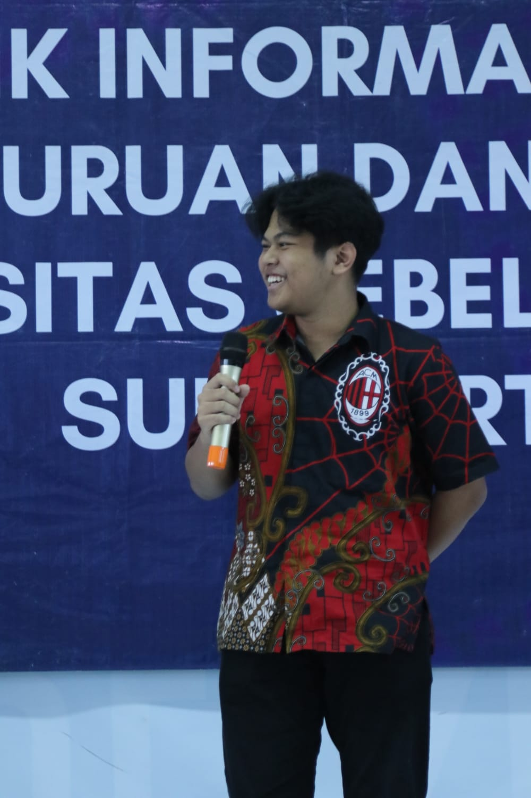
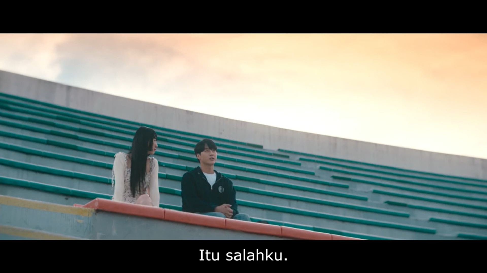

Personal Gallery
A COLLECTION OF
Catatan kecil tentang diri, perjalanan, dan kenangan.
Selamat datang di halaman pribadi saya. Website sederhana ini dibuat sebagai tempat untuk memperkenalkan diri sekaligus menyimpan beberapa kenangan dalam bentuk galeri.
| Nama | Mahardika Yumna Waratmaja |
| NIM | K3525032 |
| Program Studi | Pendidikan Teknik Informatika dan Komputer |
| Universitas | Universitas Sebelas Maret |
| Status | Mahasiswa |
Masa pembelajaran yang menjadi awal dari perjalanan sebelum melanjutkan pendidikan ke perguruan tinggi.
Mempelajari berbagai dasar teknologi, pemrograman, jaringan komputer, sistem informasi, dan pengembangan web.
Beberapa foto yang menurut saya berkesan
Sebuah momen yang pernah dilalui.
Arti akan pengalaman hidup.

Bagian dari perjalanan yang tidak terlupakan.
Teknologi dan komputer
Belajar pemrograman
Belajar Software